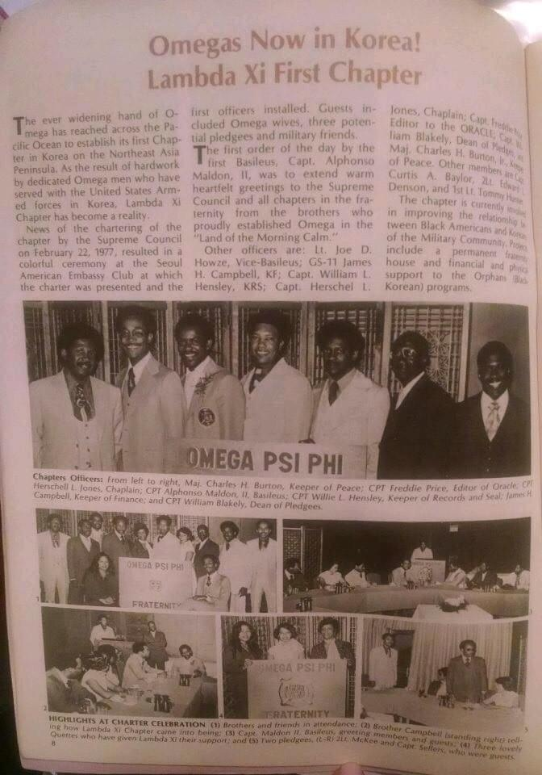

Our Legacy
History of Lambda Xi
The first Black Greek Letter Organization on the Korean Peninsula.
The charter, 1977
The year 1977 proved to be an exciting one for the international expansion of Omega Psi Phi Fraternity, as two chapters, on opposite sides of the world, were chartered six months apart. As only the fifth chapter to be chartered outside of the continental United States, Lambda Xi would call the Republic of Korea (South Korea) its home. This brotherly expansion under Grand Basileus Edward J. Braynon was a celebration for the Fraternity and the Republic of Korea, as the brotherhood had begun to make its presence known years earlier.
The original application was initiated through the Third District Representative, Brother B.T. Garnett, on 20 October 1974; on 23 May 1975, Brother Harold J. Cook, National Executive Secretary, notified Brother LTC. Leroy C. Bell of the charter application approval. Less than two years later, on 22 February 1977, Lambda Xi was chartered at the Eighth United States Army Headquarters, United States Army Garrison Yongsan, Republic of Korea.
The eleven charter members
- Brother Leroy C. Bell
- Brother Peter J. Baker
- Brother Curtis A. Baylor
- Brother Marshal F. Atkins
- Brother James H. Campbell
- Brother Thurman R. Hampton
- Brother James H. Jackson
- Brother Thomas G. Joiner
- Brother Henry L. Gibson
- Brother William J. Bryant
- Brother Roosevelt Adams
The Lambda Xi Chapter of Omega Psi Phi Fraternity, Incorporated, was the first Black Greek Letter Organization to be activated on the Korean Peninsula. For nearly five decades, the Men of Lambda Xi have proudly served with distinction on the Korean Peninsula. We fully embrace our responsibilities in the Korean/US community. Whether assisting the less fortunate or uplifting those striving for academic excellence, the wide range of talents and expertise amongst the brotherhood enables us to routinely take on tasks that most deem too difficult to accomplish.

Accolades
| Year | Award |
|---|---|
| 2026 | 13th District Graduate Chapter of the Year; 13th District Social Action Chapter of the Year |
| 2025 | 13th District Graduate Chapter of the Year; 13th District Social Action Chapter of the Year |
| 2024 | 13th District Graduate Chapter of the Year; 13th District Social Action Chapter of the Year |
| 2023 | 13th District Graduate Chapter of the Year; 13th District Runner-Up Social Action Chapter of the Year |
| 2015 | 13th District Graduate Chapter of the Year |